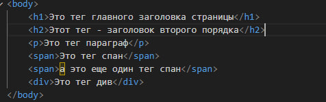
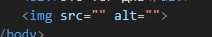

Тэг - это такой HTML элемент, текст, содержащийся между начальным и конечным тегом, отображается и размещается в соответствии со свойствами, указанными в начальном теге.
Давайте напишем пару тегов, и поместим в них текст, а после, в браузере посмотрим на различия
Попробуйте очистить текст написанный в предыдущем уроке и поместить в тег "body" вот эти теги 
Запустите уже известной вам командой код и посмотрите на результат. Думаю, даже невооруженным
глазом заметна разница в визуальном представлении разных тегов. Разные теги, могут помочь
правильно описать и разместить элементы на странице.
Вы уже заметили, что два тега span в браузере разместились в строку в отличии от остальных
тегов?
Попробуйте просто установить курсор мыши между содержимым тега и нажать enter.
Как вы могли заметить - ничего не произошло.
Хорошо, вот мы немного узнали о базовых тегах, но что если я хочу показать картинку на своем
сайте?
Представляю вашему вниманию тег "img"

Внутри данного тега мы можем увидеть два "атрибута"
src и alt
Давайте вместе рассмотрим тег ссылку. Представляю вашему вниманию тэг a.
По моему скромному мнению, самостоятельная практика - лучший двигатель обучения. По этому я порекомендовал бы вам самостоятельно поработать вот с этими тегами. Я уверен, у вас все получится!